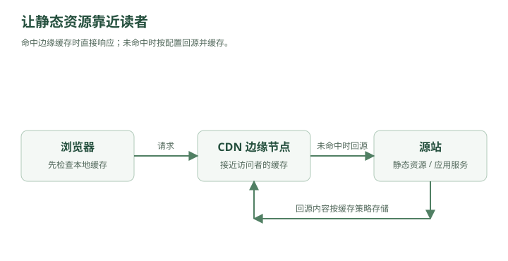

林默最近遇到了一个很奇怪的问题。
北京用户：
打开首页：120ms
上海用户：
180ms
广州用户：
600ms
新加坡用户：
1.3s
美国用户：
2.4s
林默看服务器监控：
CPU：22%
MySQL：正常
Redis：正常
MQ：正常
“系统又没过载，为什么国外用户这么慢？”
老周看了他一眼。
“因为你之前解决的，都是服务器里面的问题。”
“现在该解决——”
服务器和用户之间的问题了。
一、用户访问网站，第一步到底发生了什么？
用户在浏览器里输入：
www.example.com
林默下意识说：
“请求发送到服务器。”
老周：
“服务器 IP 是多少？”
林默停住了。
域名：
www.example.com
并不是一个 IP 地址。
真正网络通信最终需要的是：
203.0.113.10
所以用户访问网站之前，要先解决一个问题：
这个域名对应哪台服务器？
这就是：
DNS
Domain Name System。
二、DNS 可以理解成互联网的电话簿
你知道一个人的名字：
林默
但打电话需要：
138xxxxxxx
DNS 做的就是：
www.example.com
↓
203.0.113.10
于是完整流程其实是：
用户输入域名
↓
DNS 查询
↓
得到服务器 IP
↓
建立 TCP/QUIC 连接
↓
TLS 握手
↓
HTTP 请求
还没进入你的 Spring Boot，
前面已经走了很多步。
三、DNS 查询也不是直接问“互联网总部”
林默问：
“DNS 到底问谁？”
老周画：
浏览器缓存
↓
操作系统缓存
↓
本地 DNS Resolver
↓
根 DNS
↓
顶级域 DNS
↓
权威 DNS
实际流程有缓存，不一定每次都走到底。
比如查询：
www.example.com
如果浏览器已经缓存：
www.example.com → 203.0.113.10
直接使用。
没有的话，再问系统或者 DNS Resolver。
四、TTL
DNS 结果不会永远缓存。
比如：
TTL = 300 秒
意思是：
这条 DNS 解析结果可以缓存 5 分钟。
5 分钟后：
重新查询
林默马上想到：
“那 TTL 设置长一点不是更快？”
“是。”
“那就设一年。”
老周：
“如果你换服务器 IP 呢？”
林默：
“……”
TTL 越长：
DNS 查询更少
缓存效果更好
但是：
变更生效更慢
TTL 越短：
变更更灵活
但：
DNS 查询更多
又一次取舍。
五、DNS 不只是“域名转 IP”
几个月后，公司有两个机房：
北京机房
上海机房
北京用户访问：
北京机房更近
上海用户：
上海机房更近
DNS 完全可以根据：
用户地理位置
网络运营商
服务健康状态
返回不同 IP。
例如：
北京用户：
www.example.com
→ 北京 IP
上海用户：
www.example.com
→ 上海 IP
于是 DNS 开始承担：
流量调度
Traffic Steering。
这时候 DNS 已经不只是“电话簿”。
它还是：
互联网入口的导航系统。
六、可是图片为什么还是慢？
系统已经能让用户访问比较近的机房。
但首页有：
logo.png
banner.jpg
app.js
vendor.js
style.css
video.mp4
其中一个视频：
100 MB
美国用户请求北京服务器：
America
↓
太平洋海底光缆
↓
China
↓
Origin Server
光传播再快，也不能瞬移。
更别说中间还有：
路由器
运营商
拥塞
丢包
跨境链路
老周问：
“一个静态图片，有必要每次都从北京传过去吗？”
林默突然明白了。
七、CDN 出现
老周画：

查看文字版示意
北京源站
↑
│ 回源
┌─────┴─────┐
│ CDN │
└─────┬─────┘
│
┌─────────────┼─────────────┐
▼ ▼ ▼
东京节点 洛杉矶节点 新加坡节点
用户不再每次访问北京源站。
美国用户：
用户
↓
洛杉矶 CDN 节点
日本用户：
用户
↓
东京 CDN 节点
新加坡用户：
用户
↓
新加坡 CDN 节点
这就是：
CDN
Content Delivery Network。
内容分发网络。
八、CDN 的本质是什么？
林默：
“所以就是多放几台服务器？”
老周：
“可以这么理解，但关键在于——”
把内容放到离用户更近的地方。
这个思想其实和 Redis 很像。
Redis：
把数据库里的热点数据
放到离应用更近的内存
CDN：
把源站里的静态内容
放到离用户更近的边缘节点
所以从本质上说：
CDN 是互联网边缘的大型缓存系统。
九、第一次访问 CDN 会发生什么？
美国用户请求：
/banner.jpg
洛杉矶 CDN 节点：
本地没有
于是：
CDN
↓
回源
↓
北京服务器
↓
获取 banner.jpg
↓
缓存到洛杉矶
↓
返回用户
这第一次可能还是慢。
但第二个美国用户：
用户
↓
洛杉矶 CDN
↓
直接命中
不用再回北京。
这叫：
Cache Hit
缓存命中。
如果没有：
Cache Miss
然后：
回源
Origin Fetch。
十、为什么 CDN 能显著减少源站压力？
假设：
banner.jpg
大小 = 5 MB
一百万用户访问。
没有 CDN：
5 MB × 1,000,000
全部从源站发。
大约：
5 TB
流量。
有 CDN：
每个边缘节点可能只需要：
回源一次
之后用户都从 CDN 读。
源站的：
带宽
连接数
CPU
压力大幅下降。
所以 CDN 不只是：
让用户更快
还可以：
保护源站
十一、静态资源为什么特别适合 CDN？
比如：
logo.png
style.css
app.js
视频
安装包
特点：
很多人读
内容很少变化
和 Redis 缓存热点数据一个逻辑：
读多写少，非常适合缓存。
但动态 API：
GET /api/account/balance
每个人结果不一样，而且实时变化。
这种东西不能简单在 CDN 缓很久。
所以典型架构：
┌→ CDN → 图片/JS/CSS/视频
用户 ───────────┤
└→ API Gateway → 动态业务
十二、前后端分离之后，这个结构尤其明显
前端打包出来：
index.html
app.js
vendor.js
style.css
通常可以部署到：
CDN / Object Storage
后端：
api.example.com
进入：
Gateway
↓
App
↓
Redis/MySQL
于是：
静态内容
→ CDN
动态业务
→ 后端集群
两条路径彻底分开。
十三、缓存多久？
林默给所有 CDN 文件设置：
Cache-Control: max-age=31536000
一年。
结果前端上线新版本。
用户刷新：
还是旧 app.js
林默：
“完蛋。”
缓存最麻烦的问题再次出现：
内容变了，但是缓存没变。
这和 Redis 一模一样。
十四、CDN 缓存一致性
比如：
app.js
旧版本：
v1
CDN 已经缓存。
现在源站更新成：
v2
但 CDN 不知道。
在 TTL 到期前：
用户仍然拿 v1
怎么办？
一种办法：
CDN Purge
主动刷新/失效缓存。
告诉 CDN：
/app.js
删掉。
下一次用户访问：
重新回源
获取 v2。
十五、但是有一个更漂亮的办法：文件指纹
前端工程里常见：
app.a81f2c.js
下一次发布：
app.9c71ab.js
文件内容变化：
文件名也变化
于是可以放心：
Cache-Control: 1 year
因为新页面引用的是：
app.9c71ab.js
这是一个全新的 URL。
CDN：
没有缓存
↓
回源
↓
拿新版本
旧用户如果还访问：
app.a81f2c.js
继续拿旧版本也没关系。
这叫：
Cache Busting
缓存破坏 / 缓存版本化。
十六、这其实又是一个系统设计思想
不要总想着：
“怎么让缓存实时更新？”
有时更简单的是：
让新内容使用一个新 Key。
Redis 中也可以类似：
user:9527:v1
user:9527:v2
CDN：
app.hash1.js
app.hash2.js
很多缓存一致性问题，可以通过：
Immutable Resource
不可变资源
来简化。
十七、HTML 为什么通常不能缓存一年？
因为：
index.html
里面可能引用：
<script src="app.9c71ab.js"></script>
如果 index.html 自己缓存一年，
用户一直拿旧 HTML：
<script src="app.a81f2c.js"></script>
那新 JS 文件再漂亮也没用。
所以常见策略是：
index.html
→ 短缓存 / 不缓存
带 hash 的 JS/CSS
→ 长缓存
这是现代 Web 前端很重要的缓存设计。
十八、ETag 又是什么？
林默问：
“如果文件没变，但 TTL 到期了，是不是必须重新下载？”
不一定。
浏览器可以发送：
If-None-Match: "abc123"
服务器检查：
文件还是 abc123
返回：
304 Not Modified
意思：
“没变，你继续用本地的。”
不用重新传整个文件。
ETag 可以理解成：
文件版本指纹
类似还有：
Last-Modified
客户端问：
从上次修改以后变了吗？
服务器：
没变
→ 304
十九、浏览器缓存和 CDN 缓存不是一回事
林默整理：
Browser Cache
缓存发生在：
用户自己的设备
而：
CDN Cache
发生在：
离用户较近的 CDN 边缘服务器
整体链路：
浏览器
↓
浏览器缓存？
↓ Miss
CDN
↓
CDN 缓存？
↓ Miss
源站
因此实际 Web 系统可能有多层缓存：
Browser Cache
↓
CDN Cache
↓
Nginx Cache
↓
Redis
↓
MySQL
这就是：
Multi-Level Cache
多级缓存。
二十、多级缓存为什么快？
假设：
浏览器缓存命中
甚至网络请求都不用发。
最快。
浏览器没有：
CDN 命中
可能十几毫秒。
CDN 没有：
源站 Redis 命中
几十毫秒。
再没有：
MySQL
更慢。
所以：
越靠近用户
↓
越快
又回到了第二章那个规律：
热门数据应该尽量靠近使用它的人。
二十一、但是 CDN 节点自己挂了怎么办？
比如洛杉矶节点故障。
如果 DNS 还把用户：
全部指向洛杉矶节点
那就麻烦了。
所以成熟 CDN 会做：
健康检查
如果节点异常：
洛杉矶节点 ❌
流量可以调度到：
旧金山节点
或者：
西雅图节点
用户甚至可能感觉不到。
这已经开始进入：
Global Traffic Management
全球流量调度。
二十二、系统有多个机房之后会发生什么？
公司越来越大。
部署：
北京 Region
上海 Region
新加坡 Region
美国 Region
现在用户：
中国用户
→ 中国 Region
东南亚用户
→ 新加坡 Region
美国用户
→ 美国 Region
这叫：
Multi-Region Deployment
多地域部署。
好处不仅是速度。
还有：
容灾
如果整个北京机房挂了：
北京 Region ❌
可以把流量切到：
上海 Region
系统仍然可以继续运行。
二十三、可是数据库怎么办？
林默忽然发现事情又复杂了。
App 放多个 Region 很容易。
例如：
Beijing App
Singapore App
US App
但所有地方都访问北京 MySQL：
US App
↓
跨太平洋
↓
Beijing MySQL
还是慢。
那是不是：
每个 Region 都放 MySQL？
比如：
Beijing DB
Singapore DB
US DB
老周：
“可以。”
林默：
“那它们怎么保持一致？”
老周笑了。
熟悉的噩梦又回来了。
二十四、多地域真正难的是数据
静态资源：
复制到全世界
很简单。
因为主要是读。
但动态数据：
余额
订单
库存
聊天消息
可能不断修改。
比如用户在美国修改昵称：
US DB：新昵称
北京用户马上查询：
Beijing DB
它什么时候能看到？
这就再次回到：
复制延迟
一致性
冲突
只不过现在延迟不再是：
同一个机房几毫秒
而可能是：
跨洲几十到几百毫秒
于是：
多地域系统设计，真正难的不是部署服务，而是数据一致性。
二十五、Active-Passive
一种相对简单的方案：
北京 Region
→ Active
上海 Region
→ Passive
平时所有业务：
北京处理
上海：
同步数据
等待
北京整个挂掉：
流量切上海
这叫：
Active-Passive
主备模式。
优点：
架构相对简单
数据冲突少
缺点：
备用资源平时利用率低
故障切换可能需要时间
二十六、Active-Active
更进一步：
北京 Region
→ 接流量
上海 Region
→ 也接流量
这叫：
Active-Active
双活 / 多活。
资源利用更充分。
用户也能就近访问。
但难度瞬间提高。
比如：
北京：
用户把昵称改成 A
上海同时：
用户把昵称改成 B
最后到底是什么？
A？
B？
需要：
冲突解决
支付、库存更麻烦。
所以：
多活不是“再部署一套服务器”这么简单。
核心难点是：
写冲突
一致性
复制
故障恢复
二十七、RPO 和 RTO
这时候老周第一次让林默记两个真正重要的指标。
RPO
Recovery Point Objective。
问的是：
最多允许丢多少数据？
比如：
RPO = 0
意味着：
一条数据都不能丢
RPO：
5 分钟
表示灾难发生时：
最多接受丢最近 5 分钟的数据
二十八、RTO
Recovery Time Objective。
问的是：
挂了以后，最多多久必须恢复？
比如：
RTO = 30 秒
那么机房挂了：
30 秒内
业务必须恢复。
如果：
RTO = 4 小时
那要求就低很多。
所以：
RPO
→ 可以丢多少数据
RTO
→ 可以停多久
非常好记。
二十九、为什么 RPO=0、RTO=0 很贵？
老板：
“我要求任何情况下不丢一条数据，而且 0 秒恢复。”
架构师：
“预算呢？”
因为做到：
RPO ≈ 0
RTO ≈ 0
需要非常昂贵的：
同步多副本
多机房
自动故障检测
自动流量切换
持续演练
复杂数据库架构
所以高可用仍然不是：
越高越好。
而是：
根据业务价值决定花多少钱买可用性。
三十、99.9% 和 99.99% 到底差多少？
老周写：
99.9%
一年允许不可用大约：
8.76 小时
而：
99.99%
一年大约：
52.6 分钟
再到：
99.999%
一年大约：
5.26 分钟
每增加一个 9：
系统复杂度
和
成本
通常都会显著上升。
这就是：
Availability
可用性。
三十一、可是“服务器返回 200”就算可用吗？
林默说：
“只要服务没挂就是可用？”
老周：
“如果用户请求花 30 秒才返回呢？”
“……”
“如果首页打开了，但是支付全挂呢？”
“……”
所以真正的可用性不只是：
进程还活着
而应该是：
用户能在可接受时间内完成关键业务。
这也是为什么监控不能只看：
CPU
Memory
还要看：
成功率
错误率
P95/P99 延迟
关键业务成功率
三十二、平均延迟会骗人
监控：
平均延迟：100ms
林默：
“很快啊。”
老周：
“看 P99。”
P99：8 秒
意思是：
99% 请求 ≤ 8 秒
更准确一点：
排序后，99% 请求的延迟不超过这个值。
虽然大部分用户很快，
但最慢的那部分用户体验极差。
所以大型系统特别关注：
P95
P99
P99.9
而不仅仅：
Average
因为平均值可能被大量快速请求“稀释”。
三十三、长尾延迟
假设 100 个请求：
99 个请求：50ms
1 个请求：5s
平均：
≈ 99.5ms
看起来：
不到 100ms
非常漂亮。
但那个用户真的等了：
5 秒
这就是：
Tail Latency
长尾延迟。
系统越复杂，调用链越长：
A
↓
B
↓
C
↓
D
↓
E
只要某一个下游偶尔慢一下，
整个请求就可能进入长尾。
所以：
系统设计不仅要优化平均情况，还要优化最坏的那部分用户。
三十四、现在整个请求终于可以完整走一遍了
一个美国用户打开商城。
第一步：
www.example.com
DNS：
找到离用户更合适的入口
然后：
HTML / JS / CSS / 图片
↓
CDN
大部分静态资源直接从附近边缘节点返回。
动态请求：
/api/orders
进入：
最近 Region
↓
Gateway
↓
Rate Limiter
↓
App
↓
Redis
↓
DB / MQ
如果某个 Region 故障：
DNS / Global LB
↓
切换其他 Region
到这里，我们最开始那台：
Spring Boot + MySQL
已经彻底长成了一个分布式系统。
三十五、从第一章到现在，其实一直只有几个问题
林默把前六章和这一章全部画在一起。
用户越来越多
一台 App 不够
↓
负载均衡
↓
水平扩展
状态无法共享
Session
↓
Redis
↓
无状态服务
数据库读压力
主从
↓
读写分离
数据库容量和写能力
分库分表
瞬时流量
MQ
↓
削峰
系统过载
限流
下游故障
超时
熔断
降级
隔离
用户离服务器太远
CDN
多地域部署
老周说：
“你看起来学了几十个技术名词。”
“其实一直在解决几个非常朴素的问题。”
三十六、系统设计真正的六个问题
林默最后总结成：
1. 请求太多怎么办？
2. 数据太多怎么办？
3. 某台机器挂了怎么办？
4. 某个服务变慢怎么办？
5. 数据不一致怎么办？
6. 用户离服务器太远怎么办？
几乎所有常见系统设计技术，
都可以塞回这六个问题。
例如：
Load Balancer
→ 请求太多
Sharding
→ 数据太多
Replica
→ 机器挂了
Circuit Breaker
→ 服务变慢/失败
Outbox / Consensus
→ 数据一致性
CDN / Multi-Region
→ 用户太远
到这里，你已经不应该再把系统设计看成：
“背一堆组件。”
而应该开始看成：
发现瓶颈 → 找出约束 → 做取舍 → 引入新组件 → 接受它带来的新问题。
第七章结束
这一章需要真正记住的因果链是：
服务器本身没问题
↓
用户仍然慢
↓
发现网络距离也是成本
↓
DNS
↓
就近流量调度
↓
静态资源仍然跨地域传输
↓
CDN
↓
边缘缓存
↓
Cache Hit / Miss / 回源
↓
缓存一致性
↓
Cache-Control / ETag / 文件 Hash
↓
多地域部署
↓
Region 故障转移
↓
Active-Passive / Active-Active
↓
RPO / RTO
↓
可用性
↓
P95 / P99 / 长尾延迟
下一章，我们可以正式进入系统设计里最容易把人绕晕、但也是最核心的一块：
下一章：两个数据库都说自己是真的——CAP、一致性与分布式共识
会从一次真正的网络分区事故开始，一步步讲：
强一致性、最终一致性、CAP 到底在说什么、为什么网络分区无法避免、CP/AP 怎么选、Quorum、Leader、Raft 的基本直觉、脑裂、分布式锁为什么会失效，以及为什么“多副本”远没有想象中简单。
工程补充：DNS 缓存、健康检查周期和客户端连接会影响实际切换时间。CDN 故障转移与多地域容灾都需要预留容量，并验证数据恢复点（RPO）和恢复时间（RTO）。